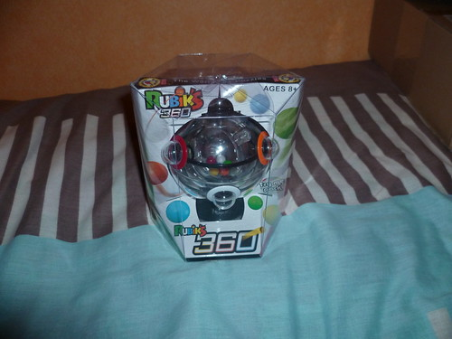

15 janvier 2011
En vrac...
Sortie de mon jeu Weapons 'n' Colors, développé en JavaScript et HTML pour le concours Gaming On de Mozilla Labs. J'ai ce projet en tête depuis quasiment un an, mais je ne l'ai commencé qu'à partir de septembre 2010 suite à l'annonce du concours. Pour l'occasion j'ai créé un onglet "Jeux" sur ce blog où vous pourrez avoir plus d'information sur ce jeu et aussi accès aux futurs jeux à venir.
Pour voter sur le site, vous devrez créer un compte et étant donné le nombre de jeux participants, ce sont seulement 5 jeux choisis aléatoirement que vous pourrez noter.
Je tiens à remercier Rudy Lespinet pour m'avoir dessiné les personnages du jeu ainsi qu'à Dominique de SD3 Studio pour la colorisation.
Ce jeu aurait pu être plus abouti pour le concours, mais je compte quand même à l'avenir apporter des améliorations comme l'enregistrement de scores, des animations, de nouveaux sons et des jokers !
Une fois la version PC vraiment prête, je développerai sans doute une version mobile.
Sortie de la bêta 9 de Mozilla Firefox 4.0 : C'est bientôt la fin du développement et la version finale devrait arriver d'ici fin février. Cette bêta 9 apporte de meilleures performances au démarrage du logiciel, dans la gestion de marque-pages ainsi que l'historique. Plus d'information ici et téléchargement ici.
J'ai fait l’acquisition d'un Rubik's 360, ici rien à avoir avec le cube, il s'agit de déplacer des billes de couleurs de la sphère centrale dans les compartiments correspondants autour de la dernière sphère. Cela peut paraitre simple, mais c'est un vrai casse-tête car toutes les sphères sont lestées et se déplacent contre votre gré pour vous compliquer la tâche !


Ça fait un moment que j'avais découvert ce jouet sur l'ancien blog de PlaynetCube, mais je n'avais pas vraiment franchis le pas car non disponible encore en France. C'est maintenant chose faite et vous pouvez le trouver sur des sites comme Amazon. Vidéo de test sur YouTube. Événement Libre en Fête le 21 mars : Depuis 2001, l'April organise une journée sur le logiciel libre à l'arrivée du printemps. Cet événement donne lieu à des ateliers, conférences, install party partout en France, et notamment dans les Deux-Sèvres cette année à l'association Gebull basé à Bressuire. Une install party est prévue mais si vous avez d'autres idées, elles sont les bienvenues sur le forum.
Commentaires 1